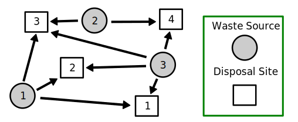
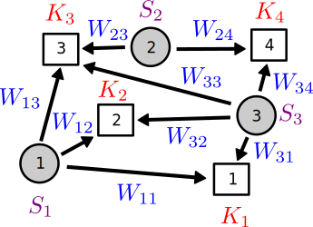
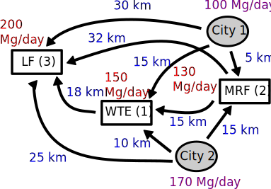
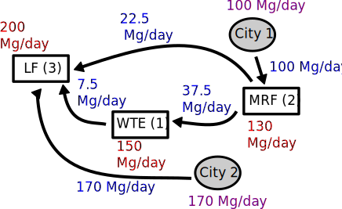

Waste Management and Network Models
Lecture 20
November 11, 2024
Review and Questions
Mixed Integer Linear Programming
- Problems involving integer variables break assumptions of LP.
- Can solve using branch and bound or related algorithms.
- Iteratively solve a sequence of restricted LPs until integer solution is found.
Example: Unit Commitment
- Power systems problem involving which generators to operate.
- Binary variables reflect operational status.
- Much more complicated than economic dispatch!
Questions

Text: VSRIKRISH to 22333
Solid Waste Management
Waste Load Allocation
Some relevant questions:
- Where do we send waste?
- What types of facilities do we build/operate?

Source: EPA
Waste Allocation As A Network
Want to model flows between waste sources and sinks (disposal sites).

Network Parameterization

| Variable | Definition |
|---|---|
| \(\color{purple}S_i\) | Waste produced at source \(i\) (Mg/day) |
| \(\color{red}K_j\) | Capacity of disposal \(j\) (Mg/day) |
| \(\color{blue}W_{ij}\) | Waste transported from source \(i\) to disposal \(j\) (Mg/day) |
What Is Missing?
This network representation takes into account the graph structure of the system, but nothing else.
What else might we need?
System-Specific Information Needs
To complete the model, need:
- System dynamics (fate & transport);
- Objectives
- Costs
- Management goals and/or regulatory constraints
Waste Management Example
Example System

Three disposal options:
- Waste-to-Energy (WTE)
- Materials Recovery Facility (MRF)
- Landfill (LF)
Waste Management Decision Variables
What are our decision variables?
Waste Management Decision Variables
| Variable | Definition |
|---|---|
| \(W_{ij}\) | Waste transported from city \(i\) to disposal \(j\) (Mg/day) |
| \(R_{kj}\) | Residual waste transported from disposal \(k\) to disposal \(j\) (Mg/day) |
| \(Y_j\) | Operational status (on/off) of disposal \(j\) (binary) |
Objective: Minimize Total Costs
What are some components of total system cost?
Cost Components
- Transportation of waste
- Disposal: fixed costs and variable costs
Objective: Transportation Costs
| Variable | Definition |
|---|---|
| \(a_{ij}\) | Cost of transporting waste from source \(i\) to disposal \(j\) ($/Mg-km) |
| \(l_{ij}\) | Distance between source \(i\) and disposal \(j\) (km) |
\[ \begin{align} &\text{Transportation Costs} = \\[0.5em] &\qquad \sum_{i \in I, j \in J} a_{ij}\,l_{ij}\,W_{ij} \end{align} \]
Objective: Disposal Costs
| Variable | Definition |
|---|---|
| \(c_j\) | Fixed costs of operating disposal \(j\) ($/day) |
| \(b_{j}\) | Variable cost of disposing waste at disposal \(j\) ($/Mg) |
\[ \begin{align} &\text{Disposal Costs} = \\[0.5em] &\qquad \sum_{j \in J} \left[c_j + b_j \sum_{i \in I} W_{ij}\right] \end{align} \]
Is this expression for disposal costs right?
Objective: Disposal Costs
The prior expression is only correct if all disposal facilities are operating.
The option to not operate disposal facility \(j\) means we need new indicator variables.
\[Y_j = \begin{cases}0 & \text{if} \sum_{i \in I} W_{ij} = 0 \\[0.5em] 1 & \text{if} \sum_{i \in I} W_{ij} > 0\end{cases}\]
Waste Mass-Balance Constraints
- Need to dispose of all waste from each source \(i\): \[\sum_{j \in J} W_{ij} = S_i\]
- Capacity limit at each disposal site \(j\): \[\sum_{i \in I} W_{ij} \leq K_j\]
Problem Formulation
\[ \begin{align} \min_{W_{i,j}, {Y_j}} & \sum_i \sum_j a_{ij}\,l_{ij}\,W_{ij} + \sum_j \left[c_jY_j + \sum_i b_jW_{ij}\right] \\ \text{subject to:} \quad & Y_j = \begin{cases}0 & \text{if } \sum_{i \in I} W_{ij} + \sum_{k \noteq j} R_{kj} = 0 \\ 1 & \text{if } \sum_{i \in I} W_{ij} + \sum_{k \noteq j} R_{kj} > 0 \end{cases} \\ & \sum_i W_{ij} + \sum_k R_{kj} \leq K_j \\ & \sum_j W_{ij} = S_i \\ & W_{ij} \geq 0 \end{align} \]
Facility Costs
| Facility | Fixed Cost ($/yr) | Tipping Cost ($/Mg) | Recycling Cost ($/Mg recycled) |
|---|---|---|---|
| WTE | 900,000 | 60 | – |
| MRF | 400,000 | 5 | 35 |
| LF | 700,000 | 40 | – |
MRF Recycling Rate: 40%
WTE Costs
Fixed Costs: $900,000/yr
Tipping Cost: $60/Mg handled
Total WTE Cost ($/day): \[2466 Y_1 + 60(W_{11} + W_{21} + R_{21})\]
MRF Costs
Recycling: 40%, $35/Mg recycled
Fixed Costs: $400,000/yr
Tipping Cost: $5/Mg handled
Total MRF Cost ($/day): \[ \begin{align} &1096 Y_2 + 5(W_{12} + W_{22}) + \\ &\qquad 0.4(35)(W_{12} + W_{22}) \end{align} \]
LF Costs
Fixed Costs: $700,000/yr
Tipping Cost: $40/Mg handled
Total LF Cost ($/day): \[1918 Y_2 + 40(W_{13} + W_{23} + R_{13} + R_{23})\]
Transportation Costs
Transportation Cost: $1.50/Mg-km
Total Tranportation Cost ($/day): \[ \begin{align} 1.5&{\Large[}15W_{11} + 5W_{12} + 30W_{13} \\ & \quad 10W_{21} + 15W_{22} + 25W_{23} \\ & \quad 18R_{13} + 15R_{21} + 32R_{23}{\Large]} \end{align} \]
Final Objective
Combining the transportation and disposal costs and simplifying: \[ \begin{align} \min_{W, R, Y} \qquad & 82.5 W_{11} + 26.5W_{12} + 85W_{13} + 75W_{21} + \\[0.25em] & \quad 41.5W_{22} + 77.5W_{23} + 67R_{13} + 82.5R_{21} + \\[0.75em] & \quad 88R_{23} + 2466Y_1 + 1096Y_2 + 1918Y_3 \end{align} \]
City Mass-Balance Constraints
City 1: \(W_{11} + W_{12} + W_{13} = 100\)
City 2: \(W_{21} + W_{22} + W_{23} = 170\)
Residual Mass-Balance Constraints
Recycling Rate: 40%
WTE Residual Ash: 20%
\(R_{13} = 0.2(W_{11} + W_{21} + R_{21})\)
\(R_{21} + R_{23} = 0.6(W_{12} + W_{22})\)
Disposal Limit Constraints
WTE: \(W_{11} + W_{21} + R_{21} \leq 150\)
MRF: \(W_{12} + W_{22} \leq 130\)
LF: \(W_{13} + W_{23} + R_{23} + R_{13} \leq 200\)
Commitment and Non-Negativity Constraints
\[ \begin{align} Y_1 &= \begin{cases}0 &\quad \text{if } W_{11} + W_{21} + R_{21} = 0 \\ 1 & \quad \text{else} \end{cases} \\ Y_2 &= \begin{cases}0 &\quad \text{if } W_{21} + W_{22} = 0 \\ 1 & \quad \text{else} \end{cases} \\ Y_3 &= 1 \\[0.5em] W_{ij}, R_{ij} &\geq 0 \end{align}\]
How To Incorporate Indicator Constraints in JuMP
Some solvers allow you to directly translate indicator constraints into JuMP. For example,
implements \[Y_2 = \begin{cases}0 &\quad \text{if } W_{21} + W_{22} = 0 \\ 1 & \quad \text{else} \end{cases} \]
How To Incorporate Indicator Constraints in Other Solvers
Not all frameworks support this type of syntax. So what can we do?
Use a “big-M” reformulation:
\[MY_1 \geq W_{21} + W_{22}\]
where \(M\) is so large that it is greater than any feasible value of the RHS.
Example Solution
After putting this all into JuMP (you know how!), optimal objective is $26,879/day.
\(Y_1 = 1\)
\(Y_2 = 1\)
\(Y_3 = 1\)
\(W_{12} = 100\) Mg/day
\(W_{23} = 170\) Mg/day
\(R_{13} = 7.5\) Mg/day
\(R_{21} = 37.5\) Mg/day
\(R_{23} = 22.5\) Mg/day
Example Solution

Key Takeaways
Network Problems
- Explicitly model flows between network components;
- Often are limits on flow or node capacities;
- Fate & transport dynamics can result in residuals and extra flows.
- Often are non-obvious results for how to route relevant stocks through network.
Another example: power flow modeling through a transmission network.
Solid Waste Management
- Network induced by flows between sources and sinks
- Different types of facilities can produce different residual waste products.
- Extra residual waste can mean facilities have to operate.
Network Models
- Can have more advanced network models with highly-specified routes
- Transportation networks
- Power transmission networks
- Pipeline networks
- Can also add flow constraints rather than just mass-balance.
- Flows could also be bidirectional.
Upcoming Schedule
Next Lectures
- Wednesday: Prelim 2
- Next Week: Stochastic Optimization and Scenario Trees